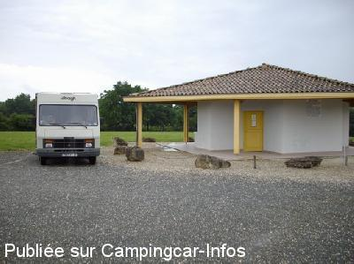

ASN = Aire de services avec stationnement nuit possible de :
FRONTENAC
(N° 593)
Accès/adresse :
Accès Place du 19 Mars 1962
33760 FRONTENAC
33760 FRONTENAC
Latitude : (Nord) 44.7368° Décimaux ou 44° 44′ 12′′
Longitude : (Ouest) -0.16291° Décimaux ou 0° 9′ 46′′
Tarif : Gratuit
Type de borne : Autre
Services :


Tous commerces
Autres informations :
Ouverte toute l'année
4 emplacements
Tel : +33(0)556 239 638

Le 07/06/2008 par claud.monique
de
Dany
le 02/08/2012 :
entierement d'accord avec le commentaire de Christian du 17/1/10 sauf que maintenant elle est devenue le repaire de drogués pendant la nuit qui font du rodéo et du moto cross entre les camping car en klaxonant.
en plus toute l'installion toilette, robinet est completement massacrée et salie.
entierement d'accord avec le commentaire de Christian du 17/1/10 sauf que maintenant elle est devenue le repaire de drogués pendant la nuit qui font du rodéo et du moto cross entre les camping car en klaxonant.
en plus toute l'installion toilette, robinet est completement massacrée et salie.
de
HERVE
le 01/05/2012 :
attention le 1er mai,brocante et vide grenier sur le chemin de l'aire et dans le village
attention le 1er mai,brocante et vide grenier sur le chemin de l'aire et dans le village
de
christian v
le 17/01/2010 :
Belle aire aérée, calme avec vue sur les bois. Employé municipal très accueillant, départ de balades cyclistes (voie verte jusqu'à Bordeaux) en contrebas du village. Coopérative vinicole à proximité (Créon- Rauzan).
Belle aire aérée, calme avec vue sur les bois. Employé municipal très accueillant, départ de balades cyclistes (voie verte jusqu'à Bordeaux) en contrebas du village. Coopérative vinicole à proximité (Créon- Rauzan).
de
crouzil claude
le 31/05/2008 :
Aire sympathique, bien aménagée, le tout gratuit. A proximité du village, nuit très calme, piste cyclable ou randonnée. Très bon accueil.
Beaucoup de municipalités pourraient prendre exemple. Merci à l'agent municipal, qui est venu à notre rencontre.
Aire sympathique, bien aménagée, le tout gratuit. A proximité du village, nuit très calme, piste cyclable ou randonnée. Très bon accueil.
Beaucoup de municipalités pourraient prendre exemple. Merci à l'agent municipal, qui est venu à notre rencontre.
de
Athaquet
le 21/03/2006 :
Une aire fort sympathique et puis de jolies falaises derrière (anciennes carrières). La piste cyclable à proximité est à faire car, ce qui est rare, bien conçue. Très calme et à proximité du village.
Une aire fort sympathique et puis de jolies falaises derrière (anciennes carrières). La piste cyclable à proximité est à faire car, ce qui est rare, bien conçue. Très calme et à proximité du village.